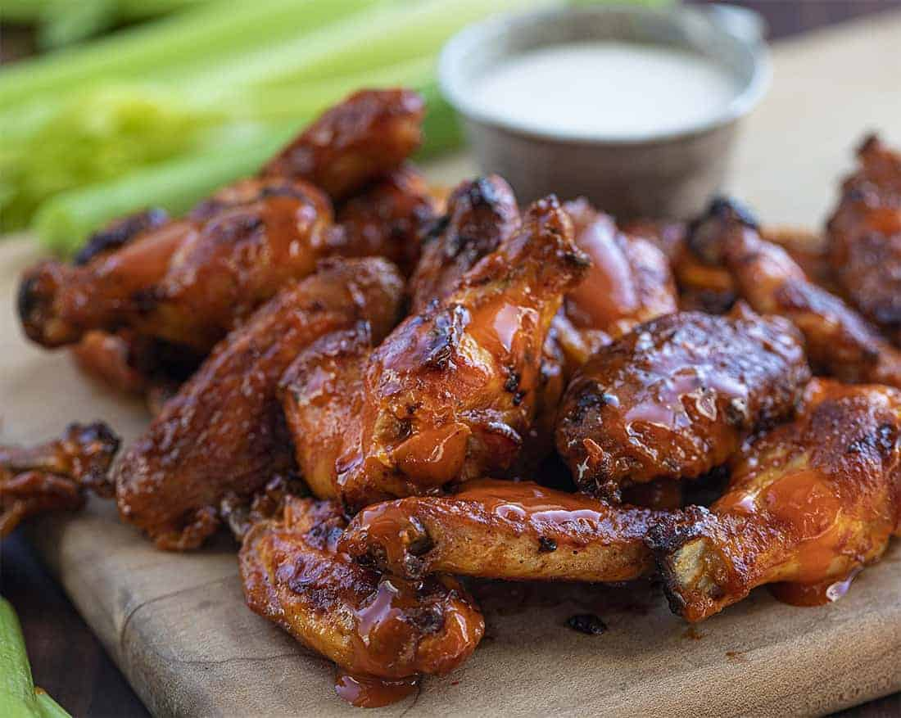

Having nothing in common with the actual buffalo not the American bison, Buffalo wings are actually named after the place of their origin - Buffalo, New York. There are numerous stories about the origins of these mouth-watering chicken wings, but the one that seems the most authentic says that they were first served at the Anchor Bar in Buffalo.
Meal prep time : 1 hour
Servings : 8